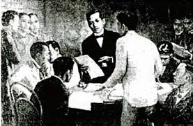

Year 1892Jose Rizal founded the Civic Organization La Liga Filipina. | |
 |
July 3, 1892 On the evening of July 3, 1892, Dr. Jose Rizal, a prominent Filipino nationalist and reformist, took a significant step in the pursuit of social and political reform by establishing and officially launching La Liga Filipina at 176 Ilaya Street in Tondo, Manila. This organization emerged during a time of increasing discontent among Filipinos under Spanish colonial rule, yet its founding was not primarily driven by a desire for outright independence. Instead, La Liga Filipina was conceived as a means to foster mutual assistance and protection among its members, emphasizing the importance of solidarity and cooperation in the face of adversity. The organization aimed to cultivate a stronger sense of unity among Filipinos, recognizing that collective action and support were essential for addressing the myriad challenges faced by the community. By bringing together individuals from various backgrounds and regions, La Liga Filipina sought to create a network of support that would empower its members and enhance their capacity to advocate for their rights and welfare. The constitution of La Liga Filipina was meticulously crafted to outline the organization's objectives, structure, and the responsibilities of its members and officials. It delineated the rights afforded to both members and leaders, ensuring that everyone involved had a clear understanding of their roles and the expectations placed upon them. This framework was crucial for maintaining order and accountability within the organization. Additionally, the constitution addressed the management of funds, establishing guidelines for financial contributions and expenditures to ensure transparency and sustainability. This financial structure was vital for the organization's operations, enabling it to provide the necessary support and resources to its members. General regulations were also included in the constitution, which served to govern the conduct of members and officials alike. These regulations were designed to promote a culture of respect, cooperation, and responsibility, reinforcing the organization's commitment to its founding principles. In summary, La Liga Filipina represented a pivotal moment in the history of the Philippines, as it laid the groundwork for future movements advocating for reform and national identity. Through its focus on mutual aid, unity, and structured governance, the organization sought to empower Filipinos and foster a collective spirit that would ultimately contribute to the broader struggle for social justice and national dignity. |
| The Year
1521 |
| Jose Rizal founded the Civic Organization La Liga Filipina. |